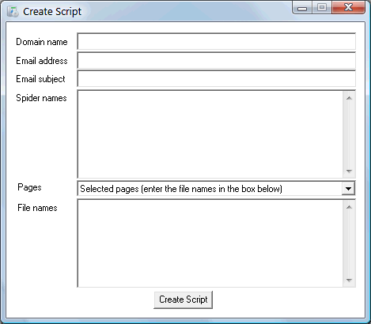
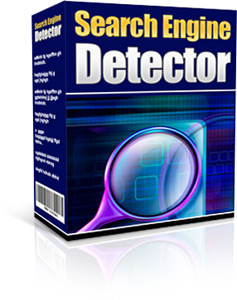

|
Are You Wasting Time On Pointless
Website Updates?...
"Here's An Easy Way To
Discover Exactly When Your Website Gets Spidered By The
Major Search Engines, So You Can Target Your Site
Updates For Maximum Benefit" |
Dear Friend,
Do you regularly update your websites to make them
more attractive to the search engines?
And did you realise that your probably wasting a lot of
time and effort in doing this?
Search engines send out "spiders" that crawl through
websites in order to find all the web pages so they can
be listed on the search engine.
These spiders are sent out to re-visit sites at irregular
intervals and the search engine listings are then updated.
This update can result in a site being added or
removed from the listings as well as affecting its position in
search results.
So if you regularly update your site, you need to
update it in-between spider visits.
Updating at any other time is just a waste of time and
effort.
But how do you know that a spider has visited your
site?
Search Engine Detector offers a simple way to
detect spider visits, automatically notifying you by email
that a spider has visited.
This means you can perform updates when they are useful
(i.e. after a spider has visited) rather than continually
performing unncecessary updates that never get seen by the
search engines.
This can save you unnecessary work, while allowing you to
optimize your sites for search engine benefits.
Quick And
Easy Solution
Search Engine Detector makes
it quick and easy to detect search engine spiders on any
website you own.
Simply run the simple setup tool, as shown in the
screenshot below:

Enter the domain name of your website, your email
address (where you will receive emails notifying you that a
search engine has visited your site) and the subject for the
emails (which defaults to "Search Engine Detected").
If you leave the "spider names" box blank, the software
detects just Googlebot (the Google spider). But you can enter
the names of any spiders you want into the "spider names" box
(as many names as you want) and the software will report their
visits to your site. The software provides a list of all the
different search engine spider names.
You can choose to have the script monitor just your
home page, monitor selected pages (you enter the file names of
the pages into the "File names" box) or monitor all pages.
Once you have entered your details, the setup tool will
generate a script file (along with a special .htaccess file),
which you upload to your web host.
That's all there is to it!
The script will continually monitor for search engine
spiders and email you whenever a spider visits your site.
Install On An
Unlimited Number Of Sites
You only need to order one
copy of this software, irrespective of how many sites you
own.
You can install your copy of
the Search Engine Detector script on as
many sites as you want - all at no extra cost.
Full Master Resale Rights
Included FREE
Search Engine
Detector is a great tool - but I'm going to make it
even more profitable for you, by including
full Master Resale
Rights free!
This means you can sell the
software yourself and keep all the
money.
Just make one sale to
recover your investment.
I'll even give you a copy of
this ready-made sales page to make it really
easy for you.
Just add your own order button to
the ready-made page, upload to your own web host and you can
be ready to take orders instantly.
You can also
use the software as a valuable bonus with other items you
sell, or include it in packages and membership
sites.

Get
Your Copy Now For Just
$9.95
Order now and your copy of
this brand new software - complete with the valuable
Master Resale Rights - will cost you just $9.95.
I think you'll agree that's an amazing price.
But even though I'm offering this
software at such a low price, I still want you to be 100%
certain that it will really work for you.
That's why the software comes
with my cast iron 30-day, no risk, 100% money-back
guarantee...
Your 100%, No Risk, No Questions
Asked,
Money-Back Guarantee
If you
still have any lingering doubts about purchasing, let me
reassure you now with the knowledge that your copy of
this software is covered by my 100% cast iron, no
questions asked, no risk guarantee.
If at
any time during the next 30 days, you
decide that this software does not meet your
requirements, just shoot me a quick email and I
guarantee to refund your money in full, no
questions asked.
All this means you can take a
full 30 days to check out all this great software
for yourself, with no risk whatsoever.
In
other words...you have everything to gain and
nothing to lose!
|
Please Order Now
For Just $9.95
You'll receive instant access to
your software by Internet download.
Totally secure payment is through
Paypal
Requirements: The script set up
software is for use only on PCs running Microsoft Windows.
Your website must support PHP and .htaccess files
(most decent web hosts support these as
standard).
The script
is intended for use with HTML web pages (.htm or .html files)
and does not require the web pages to be changed. The script
can also be used with PHP (.php) pages, by manually inserting
a line of code into the top of each PHP page to be
monitored.
Earnings
Disclaimer: The results of using this software are
dependent on many factors outside our control. We are not
therefore able to give any guarantees about the level of
income that you will attain by using this
software.
|